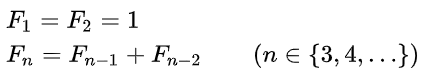
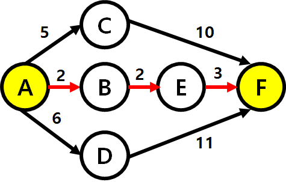
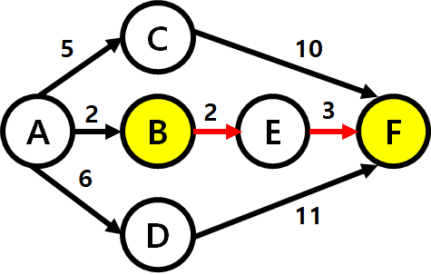
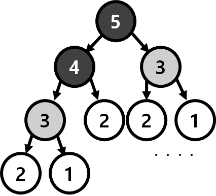

[목차]
#1 동적 계획법 (Dynamic Programming)
#2 동적 계획법의 특징
*2.1 Overlaping SubProblem 겹치는 부분 문제
*2.1 Optimal Structure 최적 부분구조
#3 동적 계획법 구현 방법
*3.1 Top - down : 재귀
*3.2 Bottom - up : 반복
* 개인적인 공부 내용을 기록한 글 이기에 잘못된 내용을 포함하고 있을 수 있습니다.
#1 동적 계획법 (Dynamic Programming)
다이나믹 프로그래밍 (Dynamic Programming) 즉, 동적 계획법은 큰 문제 (Big Problem) 를 작은 문제 (Small Problem) 로 나누어 해결하는 아이디어를 활용한 알고리즘 기법이다.
이는 마치 분할 정복 (Divide & Conquer) 방식과 비슷한데, 분할 정복과 다른 점은 다이나믹 프로그래밍 에서는 작은 문제가 중복되지만 분할 정복은 중복되지 않는다는 것이다.
#2 동적 계획법의 특징
동적 계획법 관련 알고리즘 문제들은 다음 2가지 특성을 가지고 있다.
*2.1 Overlaping SubProblem 겹치는 부분(작은) 문제
Overlaping SubProblem 이란 큰 문제 (Big Problem) 를 작은 문제 (Small Problem) 으로 쪼갤 때 작은 문제가 여러 번 재 사용 되는 것을 의미한다.
대표적인 예시로 피보나치 수열이 있는데, 피보나치 수열이란 앞의 두 수를 더한 수가 다음 수가 되는 수열이다.

int fibonacci (int n) {
if (n <= 1){
return n;
}
else{
return fibonachi(n-1) + fibonachi(n-2);
}
}F(n) = F(n-1) + F(n-2) 이고 F(n-1) = F(n-2) + F(n-3) , F(n-2) = F(n-3) + F(n-4) 로 다시 나뉘어 진다. (Fn = 큰문제 , F(n-1) F(n-2) = 작은 문제)
식을 자세히 보면, F(n-2)과 F(n-3) 이 2번 씩 겹친다. 이 것이 바로 Overlaping SubProblem(겹치는 부분 문제)의 상황이다.
*2.2 Optimal Substructure (최적 부분구조)
Optimal Substructure(최적 부분구조)란, 큰 문제의 정답을 작은 문제를 통해 풀이하는 것을 의미한다.
A지점에서 F지점까지 가는 3가지 루트가 존재 한다고 가정해 보자.
1번 루트는 A C F (15) 2번 루트는 A B E (7) 3번 루트는 A D F (17) 이다. 이 때 A에서 F까지 가는 최적의 루트는 A B E F 이다.

이제 B지점에서 F지점으로 가는 최적의 루트를 구해보자. B E F (5) 루트가 최적의 루트일 것이다.

A 지점에서 F 지점으로 가는 최적의 루트 문제를 큰 문제 (Big Problem) B 지점에서 F 지점으로 가는 최적의 루트 문제를 작은 문제 (Small Problem) 이라고 가정한다면, 작은 문제 (B ~ F)로 큰 문제 (A ~ F) 의 답을 유추할 수 있다.
이처럼 Optimal Substructure를 만족하면, 문제의 크기에 관계없이 특정 문제에 대한 정답은 항상 일치한다.
Optimal Substructure의 또 다른 예시로 피보나치 수열을 예시로 들어 보겠다.
피보나치 5는 작은 문제인 피보나치4와 피보나치3으로 나눌 수 있고, 피보나치5의 피보나치 3 값과 피보나치 4의 피보나치 3 값은 일치할 것이다. 따라서 피보나치 수열은 Optimal SubStructure 를 만족한다. 
#3 동적 계획법 구현 방법
동적 계획법을 구현하는 방법은 큰 문제에서 작은 문제로 내려가는 재귀를 이용한 Top - down 방식과 작은 문제로 부터 큰 문제로 올라가는 반복문을 이용한 Bottom - up 방식으로 나뉜다.
*3.1 Top - down : 재귀
Top - down 방식의 핵심은 1. 문제를 작은 문제로 나누고 2. 작은 문제를 풀고 3. 풀이한 작은 문제를 바탕으로 큰 문제를 푸는 사고 이다. 아래는 Top - down 방식을 이용해 피보나치를 구현한 코드이다.
int memo[1001];
int fibonacci (int n) {
if (n <= 1){
return n;
}
else{
// 큰 문제를 작은 문제로 나누고 메모한다.
memo[n] = fibonacci(n-1) + fibonacci(n-2);
return memo[n];
}
}어떠한 정답을 구하면 그 정답을 메모해 두고 메모를 이용하는 방식을 메모리제이션(Memorization) 이라고 부른다.
단지 코드가 한 줄 추가됐을 뿐인데, 코드의 효율은 눈에 띄게 증가한다.
Top - down 재귀를 이용한 방식은 시간복잡도가 O(N)이고, 일반적인 피보나치 소스코드는 시간복잡도가 O(2^n)이다.
*3.2 Bottom - up : 반복
Bottom - up 방식의 사고는 1. 크기가 작은 문제부터 차례로 풀고 2. 문제를 크게 만들어 나가며 풀이하고 3. 이 과정을 계속 반복하면 원하는 큰 문제를 풀 수 있다. 는 사고이다.다음은 Bottom - up 방식을 이용해 피보나치를 구현한 코드이다.
int dp[1001];
int fibonacci (int n) {
// 작은 문제를 푼다.
dp[0] = 0;
dp[1] = 1;
// 풀이한 작은 문제를 바탕으로 반복한다.
for (int i = 2 ; i <= n ; i++){
d[i] = d[i-1] + d[i-2];
}
return d[n]
}
그렇다면 Top-down Bottom-up 방식 중 어떤 방법을 사용하는 것이 더 효율적일까?
정답은 알 수 없다. 문제의 상황에 따라 달라지고 유의미한 차이는 아니니, 둘다 시간 복잡도를 O(N) 이라고 생각하면 된다.
하지만 예외로 Python으로 알고리즘 문제를 풀이하는 경우에는 Top - down 방식은 스택 오버플로우 (Stack OverFlow) 가 발생할 위험이 있어서 지양되지만, C++ 이나 JAVA 와 같은 언어는 어떤 방식을 사용하던 상관이 없다. 따라서 자신의 스타일에 맞는 방식을 하나 채택하여 연습해 나가면 된다.